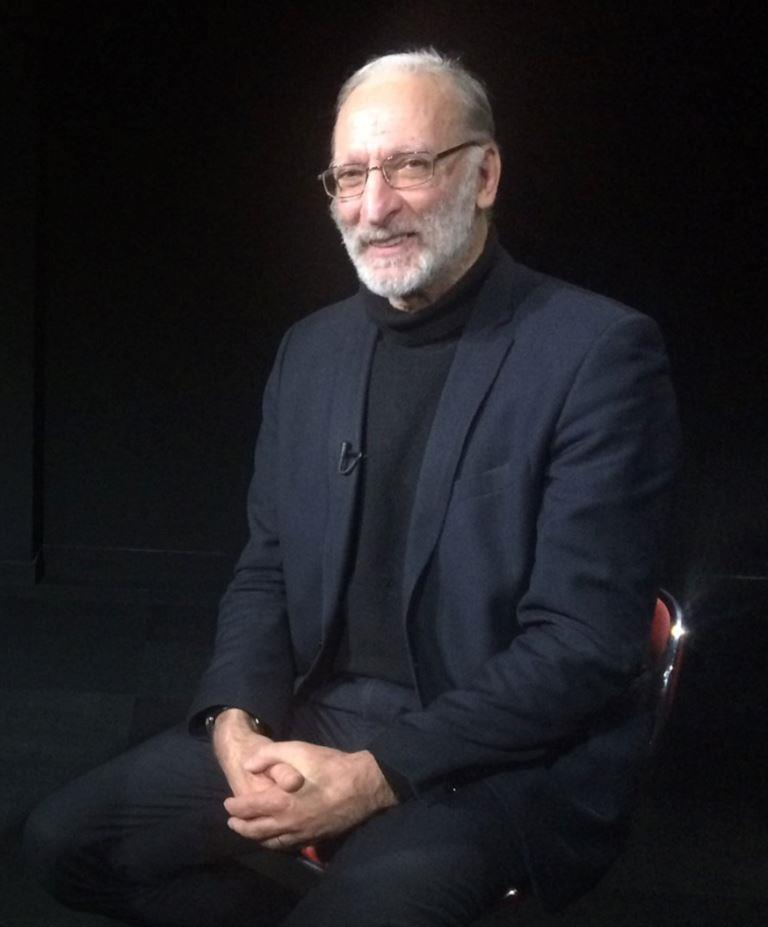
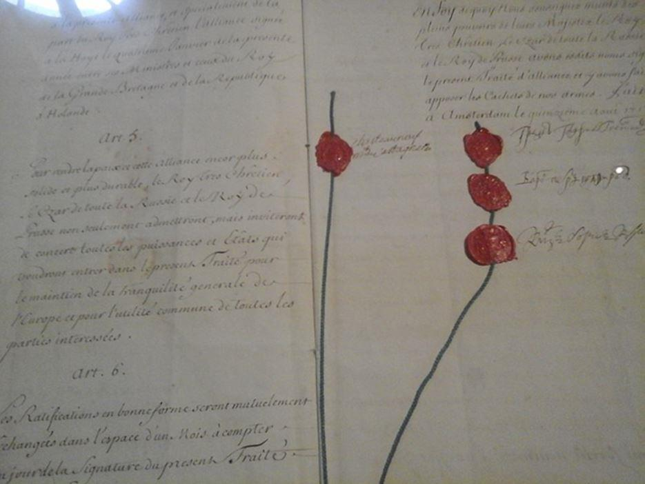
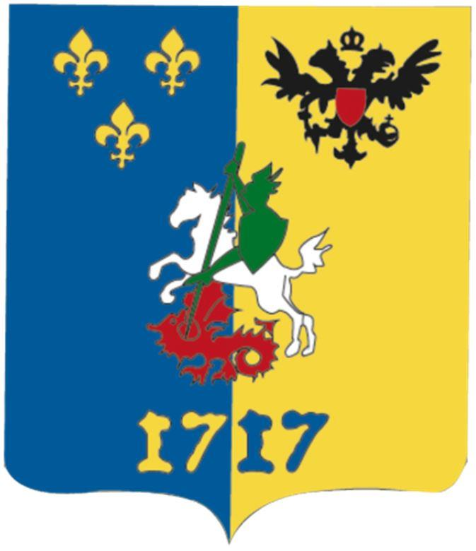
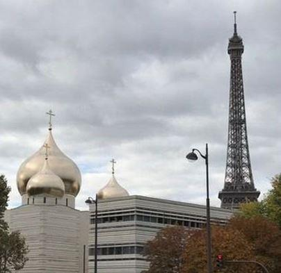

Elena SYDOROVA : Comment vous est venue l'idée de créer l’Institut 1717 ?
Emmanuel LEROY : L’idée était de créer la première fontaine d’idées franco-russe. En effet, on dit que la nature a horreur du vide et que le vide est fait pour être comblé... or, avec les co-fondateurs de ce projet, nous avons pris conscience que les échanges existant entre la Russie et la France étaient surtout axés sous les angles économiques ou culturels au sens large, mais rarement d’un point de vue philosophique ou politique, ni géopolitique. Et pourtant, nous pensons que nous avons beaucoup à apprendre de la sagesse russe. Paul Valéry, à sa manière, a exprimé cette idée ainsi : « Dans l’histoire de l’humanité il y a trois sommets : l’Antiquité grecque, la Renaissance italienne et le XIXème siècle russe ! ». Si en France nous n’avons pas oublié les deux premiers, force est de constater notre méconnaissance abyssale du troisième. Notre institut se propose justement d’apprendre à mieux connaître, voire à découvrir ces grands auteurs russes, non seulement du XIXème, mais également ceux du XXème siècle, tels Alexis Léontiev, Ivan Iline, Vladimir Soloviev, Nicolas Berdiaev et bien d’autres encore. En outre, notre entreprise a vocation à répondre aux aspirations russophiles d’une large frange du peuple français qui assiste, impuissant, au triste spectacle d’une russophobie d’Etat.
Nous pensons également qu’à l’heure où la France s’est perdue dans une vision du monde qui n’est pas conforme à son génie, ses élites doivent renouer avec ceux qui n’ont pas coupé le fil de la tradition. Et le grand paradoxe – mais qui n’est en réalité qu’apparent – de la Russie de Poutine est d’avoir réussi à conserver le lien avec les valeurs traditionnelles malgré la funeste expérience communiste et les deux décennies de turbo-libéralisme que ce pays a connues.
Par ailleurs, si la Fédération de Russie a su renouer avec la grandeur sous l’ère de Vladimir Poutine, notamment grâce à son spectaculaire retour sur la scène internationale après les dramatiques années qu’elle a vécues sous Boris Eltsine, on peut néanmoins observer au mieux un relatif effacement, au pire un suivisme, sur le plan de la pensée politique. Certes, quelques lignes rouges ont été tracées pour signifier aux membres de l’OTAN les limites à ne pas dépasser, notamment dans le domaine des mœurs, mais on est loin d’une politique de Sainte Alliance telle qu’elle avait été imaginée par l’empereur Alexandre 1er. Et aujourd’hui, sans doute plus que jamais, le monde a besoin d’être rééquilibré par un discours anti-pensée unique. Nous pensons justement que dans l’époque difficile que nous traversons, seuls les Russes sont en capacité de formuler ce discours. Peut-être s’agit-il seulement de les en convaincre ?

Traité d'alliance et de garantie réciproque entre la France, la Russie et la Prusse signé le 15 août 1717 à Amsterdam. Original en français du texte signé par le royaume de France et l'empire de Russie. Page de signatures présentant 4 cachets de cire rouge sur cordon de soie. Alternat français portant les signatures à gauche de Pierre-Antoine de Châteauneuf, marquis de Castagnères, ambassadeur de France auprès des Provinces-Unies ; à droite, signatures des plénipotentiaires russes : le comte Golovkine (chancelier), le baron Chafirov (vice-chancelier) et le prince Kourakine (ambassadeur de Russie auprès des Provinces-Unies). Document conservé à Paris aux Archives du ministère des Affaires étrangères.
E.S. : Il existe déjà une myriade d’associations franco-russes de toutes sortes, quelle est la particularité de l’Institut 1717 ?
E. L. : Il existe effectivement beaucoup d’associations qui œuvrent en faveur du rapprochement avec la Russie et nous en sommes heureux. Or notre but n’est pas de créer la pénultième, mais bien de travailler - avec des Russes - sur des sujets ou des thématiques qui intéressent nos deux pays. Nous savons qu’il y a des cercles en Russie qui étudient ces questions et notre volonté est de nous associer à cette réflexion afin d’apporter notre éclairage et notre expérience. Selon l’adage bien connu : « Nul n’est prophète en son pays ! », nous pensons être en mesure de faire avancer le débat sur le nécessaire retour à une pensée conservatrice, -ou plus précisément aux idées conservatrices-, seul antidote selon nous à la vision mortifère des Lumières qui a enfanté l’Europe que nous connaissons. Par ailleurs, et c’est l’occasion de vous l’expliciter, nous avons choisi ce nom d’Institut 1717 en référence à la visite de Pierre 1er en France, première visite d’un souverain russe dans notre pays et qui illustre, selon nous, cette volonté ancienne de dialogue et d’échanges entre nos deux grandes nations. En outre, chacun le sait : la France comme l’Europe sont soumises à une influence atlantiste majeure, et ce dans tous les domaines de la société, de l’économie à la culture, en passant par notre subordination à l’OTAN. Fort heureusement pour eux, les Russes ne sont exposés pour l’essentiel qu’à la dimension culturelle. Nous aimerions nous épauler mutuellement pour mieux y résister et réaffirmer sur notre continent les valeurs au moins bimillénaires qui ont fait ce que nous sommes, auxquelles nous sommes attachés et qui constituent les fondations les plus solides de notre avenir.
E.S. : Dans l’idéal, à quel type de relations franco-russes aspirez-vous ?
E. L. : Ce que nous voulons avant tout, c’est renouer une relation de confiance. A cette fin, il y a la volonté d’un véritable approfondissement de nos relations par une meilleure connaissance de l’autre, à travers la lecture et la découverte de nos grands auteurs respectifs – et Dieu sait s’il y a de la matière de part et d’autre ! – et il y a aussi la volonté d’aller au-delà de certaines images d’Épinal qui peuvent nuire à une bonne perception réciproque.
Nous avons également l’ambition de lancer un dialogue dans le monde des idées avec nos amis russes à un juste niveau qui écarte toute équivoque. En effet, nous n’avons nulle intention en créant l’Institut 1717 de créer une énième association pour favoriser les investissements français en Russie ou russes en France, il y en a qui font cela très bien et tel n’est pas notre dessein. Notre volonté est de contribuer avec nos futurs partenaires à la remise en perspective d’une vision du monde alternative à la pensée libérale-totalitaire qui prévaut aujourd’hui. Pour ce faire, et malgré le nom de notre association, nous n’envisageons pas le retour dans le passé, mais le recours à celui-ci pour piocher dans nos mémoires collectives ce dont nous avons besoin pour l’avenir, en l’enrichissant de nos idées et de nos convictions.
E.S. : Quel public l’Institut 1717 vise-t-il ?
E. L. : Le public que nous visons est un public éclairé – mais pas illuminé ! – et seront bienvenus tous ceux qui pourront apporter leur pierre à l’édifice. Cela va de soi, il s’agit en priorité de chercheurs, d’universitaires, d’étudiants, mais également de tous les membres de la société civile désireux de servir la cause. Au-delà de ce public, notre cercle a également pour ambition d’être un pôle d’influence auprès des élites russes, académiques, religieuses, médiatiques et politiques, car nous sommes convaincus qu’il y a chez elles une réelle attente dans ce domaine et nous entendons bien contribuer à y répondre.
Je précise que l’Institut 1717 sera une association véritablement franco-russe, elle accueillera des membres en provenance de nos deux pays et que les langues de travail seront le français et le russe à l’exclusion de toute autre.
E.S. : En quoi consisteront ses activités ?
E. L. : En tant que vivier de la coopération franco-russe, notre association se fera connaître par l’organisation de rencontres sous forme de colloques, séminaires, conférences, points de presse – dans le pays où la presse est encore libre évidemment... – mais également par la publication de nos travaux dans les deux langues, le lancement d’un site internet et peut-être également, à terme, l’édition d’une revue, bilingue également. Notre première manifestation sera d’ailleurs un colloque qui se tiendra au Centre culturel russe du Quai Branly à Paris le 30 septembre prochain.
E.S. : Pouvez-vous nous en dire plus sur ce colloque de lancement de l’Institut 1717 ?
E. L. : Eh bien, ce sera le décollage de notre fusée sur le pas de tir du quai Branly, célèbre site de lancement après celui de Baïkonour. Une dizaine d’orateurs sont d’ores et déjà pressentis sur le thème de « La nouvelle Alliance franco-russe » et à la lecture des sujets avancés par nos différents intervenants, je pense que nous avons là tous les ingrédients pour un colloque qui devrait, nous l’espérons, marquer les esprits aussi bien sur les bords de Seine que sur les rives de la Moskova.
Merci cher Président, voici une belle association avec de grands projets dont nous aurons plaisir à rendre compte ponctuellement à nos lecteurs.
Partager cette page